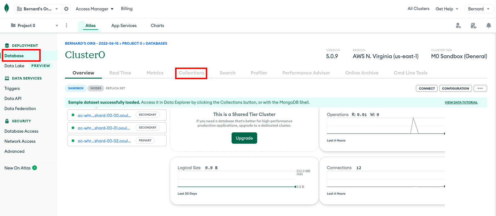
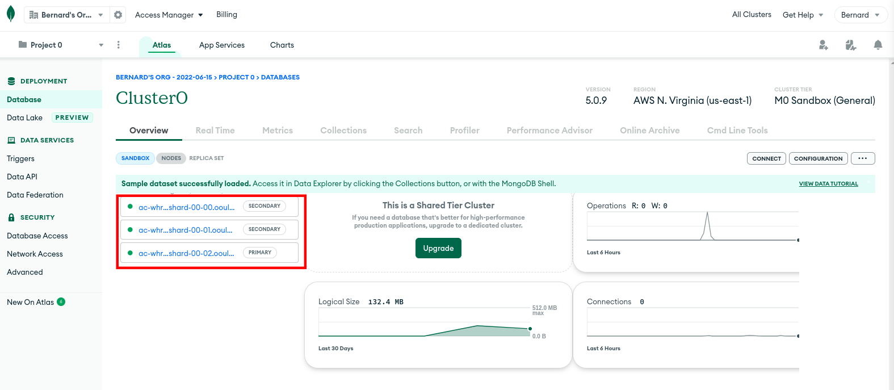
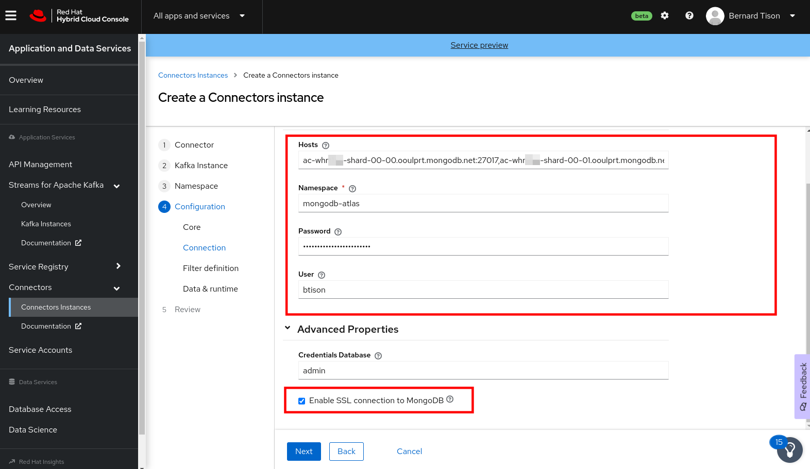
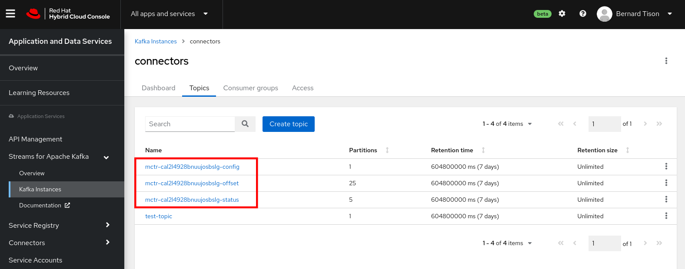

Create a source OpenShift Connectors instance for Change Data Capture
Change Data Capture is a software process that detects changes (inserts, updates, deletes) to data in a database and transforms these changes into event streams that can be consumed by other systems or applications to react on these changes. Typical use cases for Change Data Capture include data replication, streaming analytics and event-driven distributed applications.
Red Hat OpenShift Connectors offers a number of source connectors for Change Data Capture, based on the popular Debezium project. OpenShift Connectors supported databases for Change Data Capture include PostgreSQL, MySQL, SQL Server and MongoDB.
In this workshop you will configure a source connector to capture change data events from a MongoDB Atlas database. MongoDB Atlas is a fully managed cloud database provided by MongoDB. It offers a free tier for an easy getting started experience.
Provision a MongoDB Atlas instance
-
Navigate to mongodb.com/cloud/atlas/register to sign up for MongoDB Atlas. You can create an Atlas Account or sign up with Google. Accept the Privacy Policy and Terms of Service.
-
After filling in a short questionnaire, you are taken to a page where you can choose the type of cloud database you want to provision. Choose the free (shared) option, and click Create.

-
On the next page, select the cloud provider and region. Leave the other options as is. Click Create Cluster.
-
On the next page, you have to define the security settings for your MongoDB Atlas instance.
-
Authentication: choose Username and password. Fill in a username and password and click Create user to create a user to connect to your MongoDB instance.
-
Where would you like to connect from: for the moment, select My Local Environment, and click Add My Current IP Address.

-
-
Click Finish and Close to finish the security setup.
-
The OpenShift Connectors instance needs to be able to connect to the MongoDB database, so you need to allow this connection. However, as you don’t know the IP address of the infrastructure your connectors run on, you need to enable access from everywhere.
-
On the MongoDB Atlas web page for your MongoDB instance, select Network Access from the left menu.

-
Click the Add IP Address button. In the dialog box type
0.0.0.0/0in the Access List Entry field. Click Confirm to add the range to the IP Access List.You probably want to remove this rule once you finish this workshop.
-
-
Create a database and a collection in the MongoDB instance. For this workshop you will use sample data that represent movies.
-
Make sure you are on the Database page on the web page for your MongoDB instance. Click the Collections tab.
 -
Click the Add My Own Data. In the Create Database dialog box, enter
movies_dbfor the Database name andmoviesfor the Collection name. Click Create.
Your MongoDB Atlas instance is set up. You will insert data in the collection after creating the Connectors instance. Leave the browser tab to your MongoDB instance open.
-
Create a Connectors instance for Change Data Capture with MongoDB
-
In a browser tab, navigate to console.redhat.com, select Application and Data Services.
-
On the Application and Data Services page, select Connectors and click Create Connectors instance.
-
To find the Debezium MongoDB connector, enter
mongoin the search field. Click the Debezium MongoDB Connector card and then click Next. -
Select the Streams for Apache Kafka instance for the connector to consume from.
-
On the Namespace page, click the eval namespace that you created when you previously created your first source connector. Then click Next.
-
Provide the core configuration for your connector:
-
Type a unique name for the connector.
-
Type the Client ID and Client Secret of the service account that you created for your connectors and then click Next.
-
-
Provide the connection configuration for your connector. For the Debezium MongoDB connector, provide the following information:
-
Hosts: this is the set of public addresses of the replicaset of your MongoDb instance.
You can find these on the Overview tab on the web page for your MongoDB instance.Click on the first link. This will bring you the status page of the replica. The address of the replica is shown at the top of the page, in
host:portformat.
Copy the address to a text editor. Repeat for the other two replicas.
Go back to the Connectors configuration page, and enter the addresses of the three replicas separated by comma’s in the Hosts field.
The entry should look like (your values will be different):
ac-whrxxxx-shard-00-00.ooulprt.mongodb.net:27017, ac-whrxxxx-shard-00-01.ooulprt.mongodb.net:27017, ac-whrxxxx-shard-00-02.ooulprt.mongodb.net:27017
-
Namespace: A unique name that identifies this MongoDB instance. For example, enter
mongodb-atlas. -
Password: the password of the database user you created previously. Note that this is not the same user with which you logged in into MongoDB Atlas.
-
User: the user name of the database user you created previously
-
Make sure the Enable SSL connection to MongoDB is checked.

-
-
On the next page of the wizard, you can leave the Filter definition page blank. Alternatively, you can set the Database filter to
movies_dband/or the Collection filter tomovies_db.moviesto ensure you only capture change events from the movies collection. Make sure that the Include box is selected for both entries. Click Apply to apply the filter. -
Leave the values on the Data & runtime page of the wizard as-is. These are advanced values that you rarely need to change.
-
Review the summary of the configuration properties. Pay particular attention to the MongoDB Hosts field. Click Create Connector to create the connector.
Your connector instance will be added to the table of connectors. After a couple of seconds, the status of your connector instance will change to the Ready state. If your connector ends up in Error state, you can use the options icon (the three vertical dots) next to the connector to edit the configuration, and restart the connector.
Once your Debezium connector is ready, you will see 3 additional topics in your Streams for Apache Kafka instance. Debezium connectors run on top of Kafka Connect (in contrast to the other OpenShift Connectors instances, which are based on Camel-K). Kafka Connect creates these three topics to maintain its internal state.
To check for the existence of these topics:
-
On the Application and Data Services page of console.redhat.com, select Streams for Apache Kafka > Kafka Instances.
-
Click the name of the Streams for Apache Kafka instance that you created for connectors.
-
Select the Topics tab. You should see three additional topics, ending with
-config,-offsetandstatus.
-
Capture Change Data Events from MongoDB
Now you can add some data in the movies collection on your MongoDB Atlas instance and check the change data events created by the Connectors instance and streamed to Streams for Apache Kafka.
There are different ways to load data into a MongoDB Atlas instance. In this workshop, for the sake of simplicity, you will use the MongoDB Atlas web UI.
-
Navigate to the web page of your MongoDB instance. Make sure you are on the Database page, and select the Collections tab. You should see the database and collection you created before.
-
Select the
moviesselection, and click Insert Document.
-
In the Insert to Collection dialog box, select the JSON view (shown as {}), and insert the following JSON document:
{ "title": "Bad Times at the El Royale", "year": 2018, "cast": [ "Jeff Bridges", "Cynthia Erivo", "Chris Hemsworth", "Dakota Johnson", "Jon Hamm", "Cailee Spaeny", "Lewis Pullman", "Nick Offerman" ], "genres": [ "Drama", "Action" ] }
Click Insert to add the document to the collection.
-
Head over to the Application and Data Services page of console.redhat.com, select Streams for Apache Kafka > Kafka Instances. Click the name of the Streams for Apache Kafka instance that you created for connectors. Select the Topics tab.
You should see a new topic calledmongo-atlas.movies_db.movies. This is the topic generated by the Connectors instance for the change data events from themovies_dbcollection. -
Click on the topic name, and select the Messages tab. You should see one message in the topic with a payload similar to:
{ "after": "{\"_id\": {\"$oid\": \"62ab0e4d1f8d5b2ae8513274\"},\"title\": \"Bad Times at the El Royale\",\"year\": 2018,\"cast\": [\"Jeff Bridges\",\"Cynthia Erivo\",\"Chris Hemsworth\",\"Dakota Johnson\",\"Jon Hamm\",\"Cailee Spaeny\",\"Lewis Pullman\",\"Nick Offerman\"],\"genres\": [\"Drama\",\"Action\"]}", "patch": null, "filter": null, "updateDescription": null, "source": { "version": "1.9.0.Alpha2", "connector": "mongodb", "name": "mongo-atlas", "ts_ms": 1655377485000, "snapshot": "false", "db": "movies_db", "sequence": null, "rs": "atlas-ednqkj-shard-0", "collection": "movies", "ord": 21, "h": null, "tord": null, "stxnid": null, "lsid": null, "txnNumber": null }, "op": "c", "ts_ms": 1655377485836, "transaction": null }
Notice the following about the change event payload:
-
after: contains the latest state of the document.
-
source: contains metadata about the connector and the MongoDB instance.
-
op: specifies the operation that created this change. In this case the operation is
c, which stands forcreate.Refer to the Debezium documentation for more information on Debezium and the structure of data change events it produces.
-
-
Add more documents to the
moviescollection. You should see one new event in themongo-atlas.movies_db.moviesfor every document you add to the collection.The example above is taken from a dataset hosted on Github: https://raw.githubusercontent.com/prust/wikipedia-movie-data/master/movies.json
-
You can also modify an existing document in the MongoDB collection through the MongoDB Atlas web UI. This update will also generate a change event in the Kafka topic.
For example, remove some of the cast of theBad Times at the El Royaleentry. This generates a change event similar to:{ "after": "{\"_id\": {\"$oid\": \"62ab0e4d1f8d5b2ae8513274\"},\"title\": \"Bad Times at the El Royale\",\"year\": 2018,\"cast\": [\"Jeff Bridges\",\"Cynthia Erivo\",\"Chris Hemsworth\",\"Dakota Johnson\",\"Jon Hamm\"],\"genres\": [\"Drama\",\"Action\"]}", "patch": null, "filter": null, "updateDescription": { "removedFields": null, "updatedFields": "{\"cast\": [\"Jeff Bridges\", \"Cynthia Erivo\", \"Chris Hemsworth\", \"Dakota Johnson\", \"Jon Hamm\"]}", "truncatedArrays": null }, "source": { "version": "1.9.0.Alpha2", "connector": "mongodb", "name": "mongo-atlas", "ts_ms": 1655380819000, "snapshot": "false", "db": "movies_db", "sequence": null, "rs": "atlas-ednqkj-shard-0", "collection": "movies", "ord": 15, "h": null, "tord": null, "stxnid": null, "lsid": null, "txnNumber": null }, "op": "u", "ts_ms": 1655380819631, "transaction": null }Notice that the operation is now set to
u, which stands forupdateLikewise, a deletion will create a change event with operation
d, and an emptyafterfield.
You have successfully created an OpenShift Connectors instance to capture data change events from a hosted MongoDB Atlas instance in an instance of OpenShift Streams for Apache Kafka.
This is of course only one part of the story. Typically these change events will be forwarded to other systems to power functionalities like data replication, streaming analytics etc, potentially after some form of transformation to e.g. extract the latest state of a document from the data change event payload.
Transformation is currently not part of the OpenShift Connectors capabilities, but will be added soon.